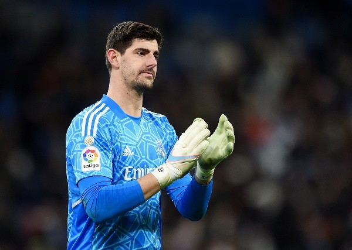

O Courtois atualmente joga no Real Madrid goleiro número 1 e da seleçao da bélgica goleiro número 1. Na FIFA World Cup defendeu um pênalti do Alphonso Davies contra o Canadá que a Bélgica ganhou de 1 a 0. Ele foio melhor goleiro do mundo em 2018, FIFA World Cup Rússia 2018 e ele ficou em 3º lugar, a Bélgica. Na FIFA World Cup Qatar 2022 foi eliminado na fase em grupos pelo Marrocos, por 2 a 0.
